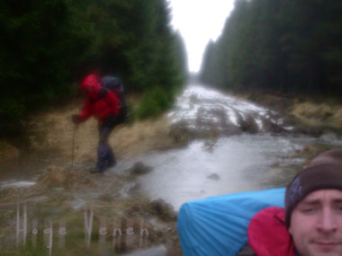

Als een vis in het water
maandag 2 februari 2004 | Reisverhalen
Terwijl dit weekend een storm Vlaamse dakpannen teisterde, moest ik me behelpen met tent en slaapzak in de Hoge Venen. Water, veel water: op de grond, in de grond, in de lucht en in de schoenen. Doet altijd weer deugd!
